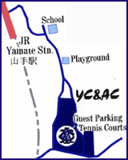

|
YC&AC is a fully equipped sports & country club, inaugurated in 1868 by a small group of English traders, offering one of the most extensive sports and leisure complexes to be found anywhere in Japan.

Children attending BFA sessions at YC&AC are privileged to have the opportunity to play on YC&AC's brand new 3rd generation all-weather field. Players are required to wear footwear with good traction, such as rubber-soled 'turf' football shoes, or football boots with molded studs. Please note that football boots with screw-in studs will not be permitted. As with all BFA sessions the wearing of shin-pads for all age groups is mandatory
Food and beverages are not allowed to be brought into the club or taken onto the field at YC&AC. The club has a very nice bar and restaurant where food and drinks can be bought at very reasonable prices.
In the event of extremely inclement weather, sessions may, at the coaches' discretion, be held inside the gymnasium at which time flat-soled sports shoes (& shin pads) must be worn. Football boots with molded studs will not be permitted inside the gymnasium. We appreciate your co-operation.
|
CLASSES AT THIS LOCATION
|
|
 PUPS PUPS
3:20~3:50pm
|
 BULLDOGS BULLDOGS
4:00~4:50pm
|
 LIONS LIONS
5:00~6:00pm
|
 ACADEMY & STARS ACADEMY & STARS
6:00~7:20pm
|
GETTING THERE
 By Train:
Take the JR Keihin Tohoku/Negishi Line to Yamate Station. Go out of the exit and turn left and left again under the train tracks. Climb the winding hill and turn right when you reach the top. Walk past the playground and you will see YC&AC on the left after the curve (approx. 10-minute walk).
By Car: SEE MAP Please note that only club members with the correct permit may park in the upper car park. Guests may park in the lower car park near the tennis courts.
|
|